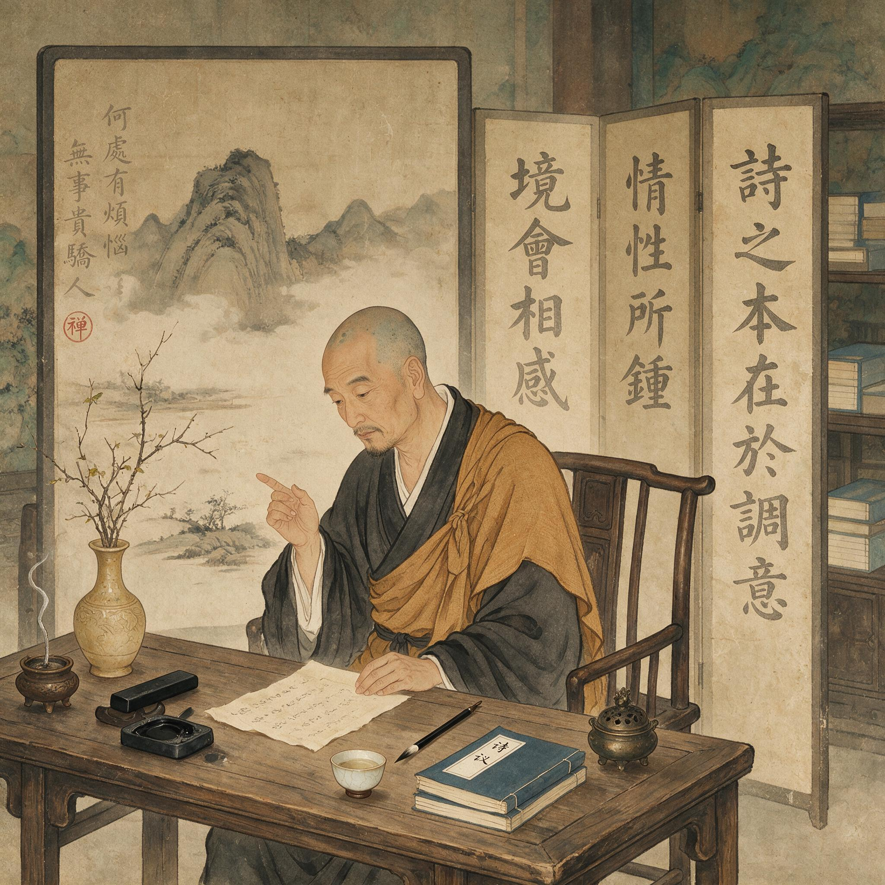

第 3 章
诗僧调停的悖论
这所谓“不立文字”的禅门戒律，恰恰催生了中国诗学史上最体系化的理论建构。当禅僧皎然在公元八世纪中叶写下《诗式》时，他不仅违背了宗门“说似一物即不中”的教诲，更在诗与禅的裂缝中，建立起一套前所未有的言说体系。这一裂缝的本质在于：禅宗以超越文字为究竟，而诗歌以锤炼文字为根基；皎然却试图证明，诗法的条理化言说本身，可以成为安顿心性的道场。
取境之时，须至难至险，始见奇句。成篇之后，观其气貌，有似等闲，不思而得，此高手也。有时意静神王，佳句纵横，若不可遏，宛如神助。不然，盖由先积精思，因神王而得乎？
这段话说得极密。第一层，“取境”是一个动作，而且是一个有意为之的动作。诗人不是被动地感物生情，也不是简单地摹写眼前之景，而是去“取”境。这个“取”字带着抉择和冒险的意思——好比一个猎人进入陌生山林，他必须主动选择路径、判断方位、承受风险，而不是等待猎物自己撞到面前。至难至险，并不是说诗境必须写得幽僻怪异，而是说在构思时不能走熟路，要逼到寻常思路不到的边缘，让语言在那里碰撞出新的可能性。
第二层，成篇之后的气貌却要“有似等闲，不思而得”。前一刻还在至难至险处攀爬，后一刻却要做得像随手拈来。皎然用一个“似”字，把功夫和自然之间的落差轻轻点破。不是不做功夫，是功夫做透了以后不露痕迹。
这个结构与禅宗“悟后无修”的形态有同构之处：开悟看似刹那间事，却是长久参究的结果；悟后行止平常，又不显悟相。第三层，他分出两种创作状态。“意静神王”时，诗句忽然奔涌，像有外力加持；
“先积精思”者，靠着平素积累，在精神饱满时豁然贯通。两者一近灵感，一近功夫。皎然不排斥任何一方，而把它们收进同一个“取境”框架里。
他的处理方式，与禅宗内部顿渐之争形成微妙的呼应。南宗重顿悟，北宗重渐修，皎然自己虽近北宗法系，却不在此处站队。他用“取境”统摄两种路线，等于在诗学领域为顿与渐找到了一个可以并存的架构。
这里有一个方向上的翻转。禅观中的“境”，最终是要离的；皎然诗学中的“境”，却是要入的，而且要在语言中把它造出来。诗人在取境、造境的过程中，经验到某种类似禅悟的豁然贯通，而不必先弃绝语言再去求悟。这样，“不立文字”的禁令就在诗学内部被撕开一道口子。文字不必是悟道的必然障碍；如果运用得当，它也可以在某个瞬间把心灵带向照见的边缘。
这个翻转并没有否定禅门的根本指向，它只是在禅与诗之间搭了一块窄窄的踏板。光有“取境”还不足以完成调停。皎然接着在“重意”的论述里，把这块踏板加宽了一点。
《诗式》卷一有“重意诗例”，专门讨论诗句中意义层叠的现象。皎然说，南朝以来诗人已有两重意、三重意、四重意的用法，但真正的高处不在层数多少，而在层与层之间是否不隔。他评谢灵运诗，用了极重的一句话：“但见性情，不睹文字。”
这八个字后来成为诗禅关系中最著名的命题之一。皎然说这句话时，并非否认文字的存在。谢灵运的诗明明字句宛然，怎么说不睹文字？他的意思是，当诗句的意蕴层层透出时，读者的注意力被“性情”引住，文字的技法和形迹便不再是关注焦点。文字在这里没有消失，而是隐入了意义的后面。
就像禅门常说“因指见月”，指头还在，但看月的人不会盯着指头不放。得月而忘指，登岸而舍筏，是一个结构性的引导关系。
皎然没有直接用“渡船”这个譬喻来论诗，但他一再强调“不睹文字”是最高境界，等于承认文字终究是工具性的，它的最高成就是让人忘记它自身。文字可以成为渡船，只要它不自炫为岸。这一套论述走到这里，显示出皎然的调停是多么小心。
他自始至终没有正面挑战“不立文字”的禅门教义。他承认文字需要被超越，承认诗的高境在文字之外，承认“不睹文字”才是上品。他只是在中间环节上做文章：既然悟后可以回头再说，既然指头可以助人见月，那么诗人在语言中寻求类似禅悟的瞬间，便不算根本性的僭越。他为诗找到的是一个“后门”，而不是正门。
这并非胆怯，而是由他的身份决定的。他是僧人，僧人的第一义仍是解脱。他可以把诗纳入禅观的延长线上，但不能让诗凌驾于禅之上。他的论述因此带有一种诗僧特有的分寸感——既要在文人圈里为诗争得尊严，又要在禅门面前保守“文字非究竟”的底线。
这种分寸感在他与韦应物的交往中看得分明。韦应物晚年刺苏州，皎然以诗往谒，二人有唱和。韦应物是中唐清澹诗风的代表人物，他的《郡斋雨中与诸文士燕集》写“兵卫森画戟，宴寝凝清香”，在郡斋意象里寓着一种萧散。这种萧散与皎然僧舍中的澹泊，表面气味相近，底色却不同。
韦应物的萧散是官身中的萧散，背后有俸禄、郡务、宴集、文士交游，是一种在世而出世的心态。皎然的澹泊是僧家的澹泊，本来就在世外，没有仕隐之间的那道张力。两人同处江南文士圈，诗风互相映照，评者常把他们并列为“清澹”一路。严羽《沧浪诗话》甚至说“韦应物诗，本出谢灵运”，而皎然恰是谢氏后人，又推尊谢灵运之诗。但这类并论只到风格为止，涉及诗与禅的根本关系时，两人仍隔着一条界线。
韦应物写诗不必为文字合法性辩护，他是儒吏而能诗，诗是他的立言之道。皎然写诗却必须面对“你一个和尚写这些做什么”的潜在诘问。他越是在诗法上系统立言，就越需要为诗的存在找到佛门内部说得通的道理。
《诗式》评诗品第，最能看出皎然这套调停的取舍。他把汉魏以来诗人按“五格”排列，以“不用事”为上，凡用典多者降格。谢灵运被他推为“格高”，评语是“其格高，其调逸，其声清，其德全”。这四个字值得玩味。

“格高”“调逸”“声清”都还是诗学内部的评价，“德全”却溢出了诗学，进入了人格评价的领域。一个禅僧，以“德”字推尊一位俗家诗人，这个措辞透露出他内心的两难。在诗学范围内，他可以依据“但见性情，不睹文字”的标准来讨论高低；但一旦需要为诗人这个主体作出圆满的评价，他就不得不借用儒家式的人格范畴。
“德全”一语来自何处，皎然没有说明，但它的儒家色彩是明确的。诗僧的身份无法为“诗人”这一完整人格类型提供彻底的合法性说明。皎然能评诗，能论诗法，甚至能把禅观引入诗境，但他在为诗人的立言事业做根本辩护时，必须向外借力。这个细节，正是他的调停方案所留下的裂缝。
再看《诗式》的结构，这种条理化冲动本身就是对“不立文字”的回应方式。皎然不仅要论诗，还要把诗法编成可以传习的体系。他有“十九体”的分类，有“五格”的品第，有“四不”“四深”“二要”“二废”“四离”“六迷”“七至”等一系列条目。
这些条目读来似有琐碎之嫌，但它们的功能很清楚：把不可说的诗境转化为可说、可辨、可学的法度。禅宗的悟不可说，公案可以用语言引导那个不可说；《诗式》的诗法也是这个逻辑的延长。皎然不说“诗即禅”，也不说“禅即诗”，他做的是在两者之间铺设一套中介语汇。取境、重意、但见性情不睹文字，这些概念都是中介。它们让诗与禅的关系从私人体验变成可以讨论的学理问题。
这个转变的后果很具体。在皎然之前，文人写诗涉及禅意，大抵是个人的、即兴的、难以言传的。白居易写“心泰”，写“时时与百般，不知老日至”，那是生活感悟的记录，不是可讨论的理论命题。
皎然之后，“取境”和“重意”成了可以反复使用的公共范畴。后人不一定同意他的评第，但若要讨论诗与禅的关系，就得用他锻造的词来说话。严羽后来讲“妙悟”、讲“羚羊挂角，无迹可求”，虽然不必直接脱胎于《诗式》，但其概念土壤已经由皎然翻松过了。观念一旦进入公共讨论，它的传播和变形便不再属于最初提出它的人。
皎然开了这个头，却无法完全控制后来者如何曲解或者引申。王士禛讲“神韵”，袁枚讲“性灵”，都能在《诗式》里找到某些先声。这不是简单的传承关系，而是说皎然把问题做成了一个“问题”，后来者无论采取什么立场，都要从这个问题的版图上经过。皎然调停的最大后果，在于它改变了对“不立文字”的理解方式。禅宗说“不立文字，教外别传，直指人心，见性成佛”，这十六字在禅门内部是对文字崇拜的釜底抽薪。
文人传统却不同。文人的不朽观建立在立言上，曹丕说“文章经国之大业，不朽之盛事”，孔门说“言之无文，行而不远”。两套传统在“文字”这一点上本来势同水火。皎然没有正面调和二者，他只是为诗歌这一最依赖文字的艺术，在禅宗的版图上找到了一个能够容身的角落。
那个角落的入口写着“取境”，门楣上刻着“重意”，门后的小径通向“不睹文字”。他制造了一种可能：诗人可以在语言中追求类似禅悟的照见，而不必先弃绝语言。文字可以被看作指向言外的工具，而非言外之境的敌人。
这个可能一旦被提出，文人的立言冲动便有了初步的辩护——虽然只是初步，虽然只是防守性的，但已经足以让诗禅关系进入一个新的阶段。
不过，皎然的方案终究是诗僧立场上的折中。他为诗争取到的合法性，是“文字可以指向禅悟”的合法性，而不是“文字本身即是道用”的合法性。他承认诗的高境是“不睹文字”，承认文字终须被超越。这是僧人身份带给他的边界。他可以把筏子造得很精致，但不能说筏子就是岸。这个问题对皎然本人并不紧迫，他毕竟是出家人，诗是方便，是接引，是修行余事。
但把一个同样的问题放到儒家文人身上，紧迫性就完全不同了。文人的立言不是余事，而是谋道、经世、不朽的正业。
他们需要的是能够正面肯定文字之道的理论，而不是一个借助诗僧身份保留下来的后门。皎然留下的缺口，恰恰成为后来者必须回答的问题。尤其是当一位文人因为文字获罪，被贬到黄州那样的地方，俸禄和闲适都失效了，只剩文字与生存之间的直接碰撞，那个时候，后门的宽度还够不够用？
皎然自己未必意识到这一缺口的深度。他做了他能做的：把禅观中的“境”从修行对象转为创作对象，把“重意”从诗句技艺上升为心性指向，把“不睹文字”设为诗的最高境界。这一系列操作，本质上是一套诗法技术，是把禅宗的心性功夫转译到诗歌创作领域。
它与白居易的生活技术并行，都是禅被文人接受后的应用形态。白居易把空观转成日常心泰的刻度，皎然把禅悟转成诗法取境的刻度。两条路线都带着浓重的实用主义色彩，都绕开了信仰皈依的层面。这正是禅进入中国士大夫精神结构的典型方式：不是作为一种宗教被接受，而是作为一套可操作的技术被取用。
技术有它的边界，有它的适用情境，也有它的盲区。皎然的盲区，就是儒家文人正面使用文字的合法性。
《诗式》中那些条目，那些“高”“逸”“闲”“达”的体字，那些“不用事”“格高”“调逸”的评语，在当时是一种据以争论的公共语言。皎然的标准明确到可以反驳。他说某人“格高”，别人可以不同意，但不同意也得用“格”这个概念来回应。
《诗式》卷一列“十九体”，每一体用一个字立目：高、逸、贞、忠、节、志、气、情、思、德、诫、闲、达、悲、怨、意、力、静、远。这些字单独看，几乎不像诗学概念，更像人格品藻和心境状态的清单。尤其“德”“贞”“忠”“诫”四字，分明来自儒家德目，却被安放在一部诗法著作的卷首。
皎然的用心不在于把它们排成一套封闭的等级，而在于让每一种诗境都有迹可循。读者若问“高”是什么，不妨去看他说的“风韵朗畅曰高”；若问“逸”是什么，便是“体格闲放曰逸”。每个字后面都跟一条极简的定义，像公案里的一句断语，不解释穷尽，只指一个方向。这样一来，诗境不再是无从把捉的气象，而成了一张可以对照的图。皎然没有说这张图就是诗本身，他只是把不可言说的部分暂时收进可知的格子。
更见机心的是那些带有否定意味的条目。“四不”说：气高而不怒，力劲而不露，情多而不暗，才赡而不疏。“四深”说：气象氤氲，由深于体势；意度盘礡，由深于作用；用律不滞，由深于声对；用事不直，由深于义类。
这些条目每一条都在做同一件事：先肯定一种品质，再为它划一道边界。气可以高，但不能高到变成怒；力可以劲，但不能劲到露出斤斧；情可以多，但不能多到落入晦暗；才可以赡，但不能赡到失之疏散。这与其说是在规定诗歌的修辞，不如说是在给语言安装一套自我提醒的机制。
皎然把禅门对“执”的警惕搬进了诗法。禅宗说“即心即佛”，紧接着又要说“非心非佛”，怕的是修行者把“心”和“佛”也执成实有。皎然对待诗歌品质的态度几乎同构：高、劲、情、才都是好的，但只要执著于其中任何一项，它就会翻转为病。诗僧的敏感正在此处——他知道文字最容易让人上瘾，而任何上瘾都会遮蔽照见。
“四离”比“四不”更进一步。“虽有道情，而离深僻；虽用经史，而离书生；虽尚高逸，而离迂远；虽欲飞动，而离轻浮。”
四句里反复出现同一个结构：虽……而离……。这个结构本身就是皎然的方法论。他不否定道情、经史、高逸、飞动，他否定的是它们各自滑向的极端。
道情本是诗中难得的清凉，可是一过头就成了深僻，变成只有自己懂的呢喃；经史可以撑起骨质，可是一过头就成了书生掉书袋，把诗写成注疏；高逸本是出尘之姿，可是一过头就成了迂远，远到不食人间烟火；飞动本是生命力的表现，可是一过头就成了轻浮，浮到没有立脚处。
这种对“过头”的持续警惕，与皎然的僧家本色分不开。一个常在禅堂静坐的人，对念头的起落格外敏感。念起不可怕，怕的是随着念头跑了却不自知。诗歌写作中的每种偏好，都像一种念头的惯性。皎然用“四离”把它们一个个点出来，为的是让诗人在措辞运思时，能对自己正在滑向哪一边保持觉知。
“六迷”则把这种觉知再收束一圈。皎然列出六种常见的误判：以虚诞而为高古；以缓漫而为冲澹；以错用意而为独善；以诡怪而为新奇；以烂熟而为稳约；以气少力弱而为容易。
这里每一句都在拆穿一种伪装。虚诞不是高古，只是空疏；缓漫不是冲澹，只是拖沓；错用意不是独善，只是表意失准；诡怪不是新奇，只是求异过甚；烂熟不是稳约，只是缺乏锋棱；气少力弱不是容易，只是才力不济。
皎然几乎是在给当时的诗坛下诊断书。他看穿了文人最容易犯的毛病：把缺点误认为风格，把不足称为冲澹，把枯窘称为容易。这种诊断能力来自两方面：一是他对前代诗作的长期品读，二是他在禅门中养成的观照习惯。
禅观让人不急于下判断，先看清事物的本来面目；皎然把它用在读诗上，于是那些顶着佳名出现的弊病，一个个现了原形。
“七至”可以看作这一串条目的收束。皎然说：至险而不僻；至奇而不差；至丽而自然；至苦而无迹；至近而意远；至放而不迂；至难而状易。
七句，句句为难。险、奇、丽、苦、近、放、难，都是诗家追求的境界，但皎然在每个词前面加一个“至”字，又在后面加一个限制，等于是说：极致之险同时不能僻，极致之奇同时不能差，极致之丽同时要归于自然，极致之苦同时要不见痕迹。
这哪里还是在谈修辞技法？分明是在谈一种近乎矛盾的心性状态：用尽全力，又不见用力；刻意追求，又归于无意。
皎然在《诗式》序里说自己“将恐风雅寝泯，辄欲商较以正其源”，他把诗歌的源头追溯到“风雅”，又用这一套“至……而不……”的句式，把源头的水引向一个可以测量的河道。河道不是水，但没有河道，水便漫无边际；同样，这些条目不是诗，但没有这些条目，诗境便无从讨论。
这整套条目真正值得注意的地方，是它们与皎然僧人身份之间那种微妙的共振。一个禅僧，本应对文字保持警惕，如今却用如此细密的文字去规范诗歌。这看起来是悖论，实则是他把禅门的“观”功带进了诗学。禅宗讲“观心”，讲“照顾念头”，皎然在《诗式》里讲的，几乎就是“照顾诗句”。每一组条目都是一次提醒：这里会滑，那里会执，此路看似高古实则空疏，彼路看似冲澹实则拖沓。他不给人一个可以安稳停靠的终点，只给人一套不断校准自己的方法。这个方法在禅门叫“牧牛”，在诗学里也可以叫“牧句”。牛要牧，句也要牧。牧得久了，才可能接近那一句“但见性情，不睹文字”——文字还在，只是不再绊住人的目光。
《诗式》对具体诗人的品第，正是这套方法的应用。皎然评王维，说“王右丞诗，格老味长，虽无警策，而有远韵”。“格老味长”是诗学判断，“虽无警策”是退一步，“而有远韵”再进一步。这一退一进之间，王维诗的面貌就被勾出来了：不靠警句惊人，却在整体气韵上留着余味。
但王维也是以禅意诗风著称的，皎然却没有在这里提王维的禅，只说“格老”“味长”“远韵”。这说明他的评诗尺度没有因为王维的佛门因缘而松动。他用的是同一把尺子：格调是否高，意味是否长，用事是否直，语言是否滞。禅意若不能转化为诗格，单凭“空”“寂”一类字眼，在皎然这里是不算数的。
再看他评孟浩然，更见这种尺度的一贯。他并不因为孟浩然诗中的清澹就许以上品，反而对其某些诗句有具体商榷。这种不徇情面的品第方式，正是僧人本色——不以交情论诗，不以身份护短。
皎然与韦应物的交往，恰能看出这套标准在人际中的运用。《唐才子传》记皎然以诗往谒韦苏州，初次献诗，韦应物殊不喜；次日再献旧制，韦应物才大加叹赏。这段记载极短，却意味深长。
皎然初谒时大约揣摩韦应物的口味，写了些清澹应景的篇什，反而失了自己平日的手眼。待他拿出旧作，那些经过《诗式》标准反复校准过的诗句，才在韦应物面前立住了。韦应物的叹赏，几乎可以看作对皎然那套诗学法度的一次外部确认。
不过，两人唱和的根基仍有差异。韦应物《郡斋雨中与诸文士燕集》中“兵卫森画戟，宴寝凝清香”一联，萧散里带着郡斋的威重，是官身中的出世；皎然酬答之作，如“禅门本无系，何事入林丘”一类，清澹则清澹，却从根子上没有仕隐之间的拉扯。两人诗风相近，底色不同。相近处在于都尚清澹，不同处在于一个要从世务中挣出萧散，一个本来就住在澹泊里。
皎然在《诗式》中反复标举的“高”“逸”“闲”“静”，放在韦应物那里，是需要用力修来的心境；放在皎然自己这里，却是日常的功课。正因如此，皎然可以评韦应物，却不会为自己的评诗资格感到不安——他本来就不在“立言不朽”的那条线上。
由此便引出那个更具分量的后果。《诗式》的条目不是给人一套现成答案，而是把“诗与禅究竟如何相遇”这个问题，从私下的体会变成了可以用公共语言争辩的题目。皎然说“高”是风韵朗畅，别人可以起来反驳说“逸”也可以朗畅，反驳者并不因此跳出禅门，依旧站在皎然铺过的地面上。这就是条理化的力量：它把不可言说的部分暂时搁置，把可以言说的部分做成一张可修订的图。后来者无论服气不服气，都得在这张图上说话。
皎然的折中正在此处显出它的贡献与局限。贡献在于，他为诗找到了一条通向禅的“后门”——文字可以成为渡船，只要不自居为岸。局限也在此：这扇后门是开给诗僧的，门内的规矩依然是僧家的。他没法从正面说文字本身就是道用，只能说文字可以指向言外。
这个“没说出口”的部分，恰恰是儒家文人最需要听到的。文人的不朽建立在立言上，他们要的不是一个渡船的工具主义，而是文字之为道的充足理由。皎然没有提供这个理由。他的身份不允许，他的诚实也不允许。
于是，《诗式》的条目越是精密，那个被精密地避开的问题就越是清晰：如果文字终须被超越，那么以诗立身的文人，他们的立言事业，究竟凭什么成立？这个问题被皎然精准地标记出来，却不可能由他来回答。
这就把诗禅讨论从玄默的私人体验推进到了可讨论的理性轨道。可讨论，意味着可以被修正，也可以被超越。皎然的遗产不在他的具体结论，而在他把诗禅关系变成了一个学理问题。此后的几百年里，人们不断回到这个问题的起点，又不断试图从不同方向突破它。
皎然站在那个起点上，手里拿着《诗式》，脚下是诗与禅之间的那道门槛。他往两边各看了一眼，然后蹲下来，在地上划了一些记号。这些记号就是“取境”，就是“重意”，就是“不睹文字”，就是“但见性情”。
记号本身并不完整，背面有他的身份刻下的界线。但无论后人怎么走，总要从这些记号旁边经过。
他把禅门的“境”从“离”的方向扳到了“入”的方向，又用“似等闲”“神助”“积精思”这些词语，把创作的功夫与悟后的平常心叠合在一起。再往前走一步，就是直说文字可以是渡船了。皎然没有走那一步。他把渡船的构造讲得很细，桨位、吃水、行速都标得清清楚楚，却始终不说这艘船可以代替岸。这是他作为诗僧的诚实，也是他的局限。
那个局限最终要由一个不在禅门之内的人来打破，一个必须依靠文字、又因文字而遭遇困厄的人，一个无法再靠俸禄和闲适刻度安置身心的人。问题已经摆出来了，而且再也不会退回私人体验的沉默里。